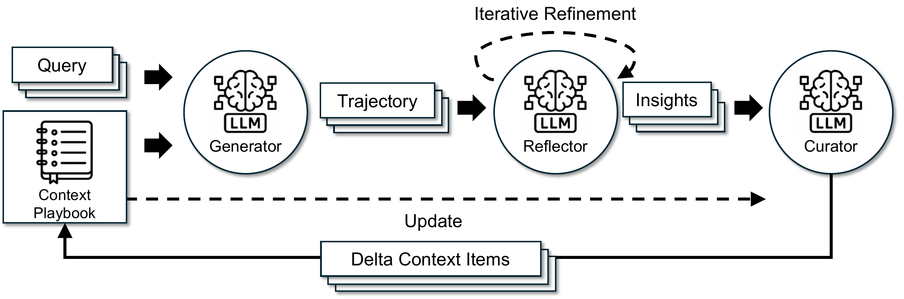

01研究背景与问题定义
复杂工具任务和领域推理常依赖细节：某个 API 的用法、一个财务概念的判断条件、一次失败暴露的例外。把这些经验反复压成通用提示，文本虽然短了，模型下次真正需要的操作知识却可能消失。ACE 将上下文看作持续演化的策略手册，用结构化条目积累经验，并以局部增量代替整份重写。
问题在更新方式，而不只是上下文长短
论文区分两种风险。“简短偏好”使经验被抽象成泛泛原则，丢失领域细节；“上下文坍缩”则发生在迭代重写中，模型一次重新生成就可能覆盖掉长期积累。窗口变大只提供容量，不会自动解决如何更新已有知识的问题。保留全部原始轨迹又会引入大量与当前任务无关的过程材料。
| 问题 | 直接后果 | 需要改变的维护方式 |
|---|---|---|
| 通用化过度 | 留下“检查结果”等原则，却失去可执行策略与例外。 | 保存小粒度、领域相关的策略、概念和常见错误。 |
| 每次整份重写 | 一次压缩可能抹掉大量仍然有用的旧经验。 | 仅提出局部增量，未涉及的条目继续保留。 |
| 只增长不整理 | 近义规则、旧判断和重复条目争夺上下文。 | 增长与语义去重、使用反馈维护结合。 |
| 反馈自身不可靠 | 错误反思会被当作经验继续传播。 | 将经验提炼与整理分工，并明确其仍依赖反馈质量。 |
核心创新：把经验更新变成局部、可管理的操作
ACE 的控制对象是输入中的策略手册，不是模型权重。执行者产生轨迹，反思者从成败中提炼经验，整理者把经验变成增量条目，再由程序合并到已有内容。核心区别在于：一次学习不再要求模型重新说出整份历史知识。未被改动的经验可以继续存在，更新也有更明确的作用位置。
“详细”仍有边界。ACE 希望保留能改变未来行为的知识，并不主张所有任务都要更长的提示，也不把原始日志无限追加。它能降低整份重写的遗忘风险，但条目是否正确、是否仍适用，是另一项需要反馈和证据支撑的要求。
02方法与技术路线
ACE 将任务执行、经验解释与内容维护分给三个角色。模型负责判断“学到什么、该怎样表达”，运行逻辑负责按条目合并和去重。局部更新约束了修改范围，却不自动验证经验的语义正确性。
Generator · 执行
完成推理或工具任务，产出轨迹、答案，并标记哪些条目有帮助或误导。
Reflector · 提炼
读取轨迹和可用结果反馈，定位具体成败原因；可多轮修订经验。
Curator · 组织增量
结合已有手册组织候选条目，避免将新经验压成一份替代全文。
程序维护 · Merge ＋ Grow-and-Refine
按标识新增或更新条目与统计；用语义嵌入检查冗余，按应用选择主动或延迟整理。合并执行是确定性的，经验判断仍来自模型。
论文原始 ACE 框架图 · 点击对照

Generator：让执行轨迹成为经验来源
Generator 读取任务与当前手册，沿原有任务框架完成推理或工具调用。AppWorld 实验沿用官方 ReAct 执行过程，ACE 主要改变提供给它的知识及其更新方式，而不是重写环境。生成的不只是最终答案，还有能暴露错误 API 使用、推理遗漏和有效策略的过程。
执行者还指出用到的条目是否有帮助或造成误导。这使后续维护能够关联到具体规则，而非只知道“整份提示这次得分多少”。但这些使用反馈包含模型判断：一项任务成功不能证明所有被引用条目都有效，失败也可能来自环境或另一个步骤。
Reflector：先找可迁移的原因，再决定写回什么
Reflector 接收轨迹及可获得的结果信号，从成功和错误中提炼具体知识。它的工作是把“这次没做成”变成可供下一题使用的条件和办法，例如遗漏了哪个成本项、调用接口前需要核对什么，而不是把最终答案直接当成新策略。论文允许多轮反思修订；主实验的最大修订轮数为 5。
把反思与整理分开，是为了避免一个模型在同一次生成中同时诊断、抽象、去重并重写整个手册。分工降低了职责混杂，但没有创造额外真值。AppWorld 中执行成败能提供可用信号；只有模型自评而缺乏可靠反馈的领域，则可能把错误解释继续写回。三个角色在主实验中均使用同一非思考模式的 DeepSeek-V3.1，收益不应解释为强教师向弱执行者传授知识。
Curator 与 Delta Updates：保护未被改动的知识
Curator 将反思经验组织成小组候选条目，并与已有手册对应。条目的唯一标识让更新有局部作用位置，计数则记录使用反馈。程序把候选增量合入现有内容，而非让模型每次重建整个手册；这种“生成小变更、保留大部分旧状态”的结构，是避免一次摘要覆盖长期积累的关键。
| 对象或动作 | 主要职责 | 成立边界 |
|---|---|---|
| 经验是否可迁移 | Reflector 根据轨迹与反馈作出判断。 | 可能归因错误或过度概括。 |
| 候选增量的组织 | Curator 结合当前手册形成条目。 | 有明确位置不代表内容正确。 |
| 增量合并 | 程序保留旧条目并按结构应用新增或更新。 | 确定执行不能证明语义兼容。 |
| 冗余检查 | 语义嵌入比较辅助去重。 | 语义接近的条目也可能有不同适用条件。 |
因此，ACE 的保留性首先是更新结构上的性质：不相关的旧内容不会被一次重新生成顺手省略。它不是“所有知识永不丢失”的形式保证，也不等于拥有经过验证的完整冲突消解算法。论文正文给出维护原则，未将所有应用的去重阈值或矛盾裁决策略统一规定为一个固定算法。
说明性示例：局部新增为何不同于重写整份手册
依据 ACE 条目与增量机制构造，内容和标识均非论文原始记录。
当前手册
条目 A：先检查对象权限。条目 B：批量操作前核对筛选条件。此次失败暴露了“分页结果未取全”。
候选增量与合并后
新增条目 C：存在后续页时继续读取，再统计或执行批量操作。A、B 保留，不需要为了加入 C 再次重新生成。
如果 C 其实是只在某类接口适用的规则，仍需准确记录触发条件；局部写回只能缩小改动范围，不能消除错误归纳。
Grow-and-Refine：增长与整理有不同时间尺度
单纯保留旧条目会产生新的问题：重复策略占空间，旧判断可能继续被调用。ACE 采用先增长、再整理的机制，新标识对应的条目追加，已有条目可更新统计等内容，再通过语义相似性削减冗余。整理既可在每次增量后进行，也可延迟到窗口压力出现时，取决于应用对延迟和准确率的要求。
这让“获得新经验”和“压缩重复”成为可分别控制的操作，而不是在每次学习时强迫模型重新总结全部知识。代价是手册长度、反馈噪声与检索适用性仍需要管理。详细条目对工具密集和领域知识任务有价值，并不意味着越长越好；论文附录也承认，一些只需少数通用规则的任务未必受益。
离线与在线适应：同一个更新器，不同的证据权限
离线模式在训练划分上执行、反思并更新手册，可多轮重访同一批题，之后在测试集使用所得上下文。在线模式按固定的打乱顺序逐个预测测试样本：当前题先用已有手册作答，再利用该题的可用反馈更新，供后面的题使用。当前答案不能被更新后的手册回头重算成一次更高成绩。
主结果中 AppWorld 的在线 ACE 还包含离线预热；移除预热后的均值是另一项消融。它没有使用当前题未来才会出现的信息，但也不是从空手册开始的纯在线学习。监督权限与初始化方式，都会改变能否把收益解释为运行中的自主适应。
03实验设计与结果分析
AppWorld：同一底座上改善了什么，又有哪些退步？
均基于 DeepSeek-V3.1 与官方 ReAct；TGC、SGC 分别为任务目标和场景目标完成指标。Average 是正常／挑战两划分的四项均值，并非一个独立的总任务成功率。下表为主表节选，单位 %。
| 方法／条件 | 正常 TGC | 正常 SGC | 挑战 TGC | 挑战 SGC | 四项均值 |
|---|---|---|---|---|---|
| ReAct，无适应 | 63.7 | 42.9 | 41.5 | 21.6 | 42.4 |
| 离线 GEPA，有标签 | 64.9 | 44.6 | 46.0 | 30.2 | 46.4 |
| 离线 ACE，有标签 | 76.2 | 64.3 | 57.3 | 39.6 | 59.4 |
| 离线 ACE，无标签 | 75.0 | 64.3 | 54.4 | 35.2 | 57.2 |
| 在线 DC，无标签 | 65.5 | 58.9 | 52.3 | 30.8 | 51.9 |
| 在线 ACE，无标签＋预热 | 69.6 | 53.6 | 66.0 | 48.9 | 59.5 |
离线有标签时，ACE 相比 GEPA 的四项均值高 13.0 个百分点，支持整套条目化经验构建对该任务有效。无标签离线 ACE 仍高于基础执行者，说明工具执行结果等自然信号也能支持适应；但不能据此说它不需要可靠反馈。
在线比较体现另一种取舍：ACE 的挑战划分更强，正常 SGC 却比 DC 低 5.3 个百分点。平均领先不等于每项支配。另外，预热会改变起点：不含离线预热的在线 ACE 均值为 56.1，而表中的预热版本为 59.5。两者应分开报告，不能把 59.5 全部解释为从零开始的在线经验积累。
反思与反复适应是否有用，反馈差时会发生什么？
| 配置 | 均值 | 可解释的增量 |
|---|---|---|
| 无 Reflector，也无多轮适应 | 55.1 | 保留其余维护结构的起点。 |
| 有 Reflector，无多轮适应 | 56.8 | 在此前提下增加反思为 +1.7 个百分点。 |
| 完整 ACE | 59.4 | 进一步加入多轮适应为 +2.6 个百分点。 |
这组对照支持反思与重复适应都有增量价值，却没有单独隔离所有因素：它不是“只把整份重写换成 delta”的一因素实验，也不能证明任意规模的手册都不会坍缩。论文中整份重写骤然丢失信息的案例解释了风险，完整系统和消融说明方案有用，两种证据的强度不同。
| 条件 | FiNER | Formula | 说明 |
|---|---|---|---|
| 无适应的基础模型 | 70.7 | 67.5 | 任务原始起点。 |
| ACE，可见真实标签 | 76.7 | 76.5 | 两项均改善。 |
| ACE，无真实标签 | 67.3 | 78.5 | FiNER 低于起点，Formula 仍提高。 |
FiNER 需要细粒度金融实体判断，缺乏可靠反馈时，适应可能把错误解释写成后续规则；Formula 的不同方向说明反馈问题与任务结构有关，不能把“无标签”当成统一难度。最稳妥的结论是：ACE 能利用可获得的反馈组织经验，但维护结构不能凭空补足经验正确性的依据。
成本优势测量的是适应过程，还是长期服务？
| 设置／基线 | 适应延迟 s ↓ | 同设置其他成本 ↓ |
|---|---|---|
| 离线 AppWorld／GEPA | 53,898 → 9,517 | rollout 数：1,434 → 357 |
| 在线 FiNER／DC | 65,104 → 5,503 | 输入／输出 token 费用：$17.7 → $2.9 |
对应降幅分别是离线延迟 82.3%、rollout 数 75.1%，以及在线延迟 91.5%、token 费用 83.6%。局部增量和程序合并减少反复重写，确实改善所测适应流程。但两个数据行来自不同任务与基线，不能把它们拼成同一条成本曲线。
这些结果也不等于“更长手册免费”。部署时的输入长度、缓存命中、任务规模与后续维护次数仍会影响服务成本。论文关于 KV 复用等系统进步的讨论提供了可行方向，不能替代 ACE 在不同长度与生命周期下的完整成本测量。
04贡献、局限与综合评价
核心贡献：将经验积累与全文重生成解耦
| 层次 | 实质贡献 | 证据能支持到哪里 |
|---|---|---|
| 概念 | 把上下文视为持续完善的策略手册，而非每轮压缩的摘要。 | 适合需要领域细节与复杂工具经验的所测任务，不是所有任务的通用最优形态。 |
| 方法 | 三角色分工、条目化增量与增长整理机制。 | 完整系统和部分设计消融支持效用，未分别证明所有细节的必要性。 |
| 工程 | 由程序合并局部变化，降低重复生成与适应开销。 | 有适应阶段的延迟和费用结果，长期服务账单仍依赖使用方式。 |
即使将来不用“手册”或相同的三个角色，仍值得保留的是更新边界：让新经验只改变相关知识单元，并把经验判断与状态写入分开。它把“怎样减少一次学习对旧知识的破坏”转成可以设计的系统问题，而不是只要求模型写得更好。
保护旧条目，也可能保护错误或已经过期的经验
局部更新减少无意遗忘，但原有条目若不再适用，也可能长期留在上下文中。帮助／伤害计数受到任务分布影响，语义去重不识别所有矛盾，更不能验证新规则的适用条件。FiNER 无标签的下降说明，这种风险不是仅由想象提出的；反馈质量会改变适应方向。
因此，可靠性问题从“整份重写会不会丢”转移到“应该保留什么、如何纠错”。可在发生接口或规则变化后，固定旧手册，分别比较只追加、带反例修订和显式失效管理，检查错误经验能否被及时撤回。这样的验证比单纯扩大静态测试集更能检验持续维护能力。
已有结果还不能区分详细知识与更充分适应的全部作用
ACE 同时改变经验表示、角色分工、更新方式和访问训练样本的过程。消融支持其中部分设计，但完整系统领先不证明所有收益都来自“更详细”。如果给相同长度、相同迭代预算的规则库增加同样的知识，是否也能达到类似水平，仍是有解释力的对照。
可以固定经验内容和实际模型调用预算，仅改变全文重写或局部更新，再检查有用条目的保留率与留出表现；另用等长度但无关的扩充控制纯粹的长度效应。若只有相关内容有效、局部更新又更稳，才更能把“知识质量”与“更新结构”的贡献分开。
在线收益依赖反馈权限、初始化和顺序
当前在线协议是按同一打乱顺序先预测再更新，部分结果以离线手册预热，并可能允许真实标签。它支持一类连续上下文适应，却没有直接证明跨时间分布变化、未知反馈延迟或无限任务流中的稳定学习。要把结论外推到持续运行，应明确哪些信号在现实使用时能获得，以及早期错误会怎样影响后续知识。
综合判断是：ACE 为知识密集任务提供了有实证支持的上下文维护方案，关键价值在于保存可操作经验并控制更新范围。它的结果支持所测任务的效用和适应阶段效率；“详细永远优于简短”“增量合并就保证知识正确”“长期运行成本必然更低”都超出当前证据。后续最值得研究的是相关经验的保留、失效与纠错能否同时做好。